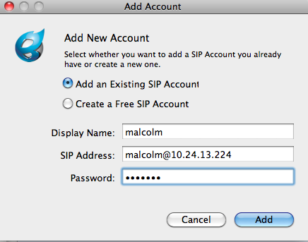
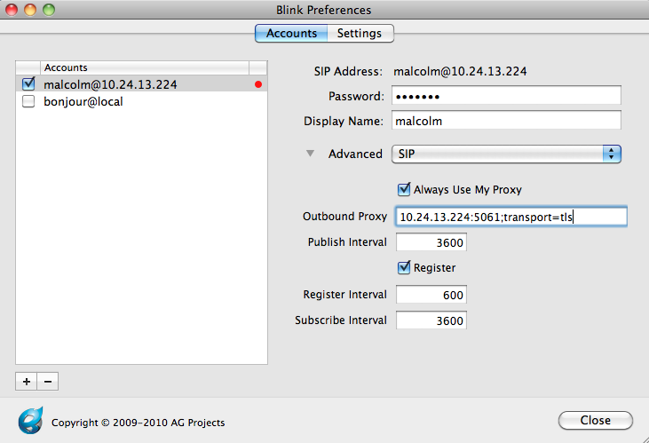
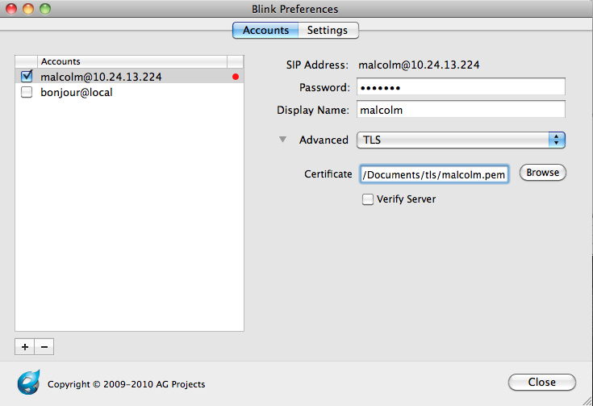
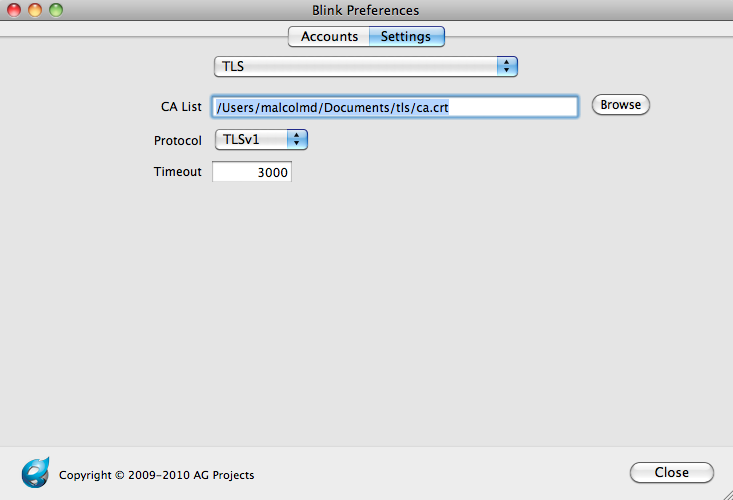
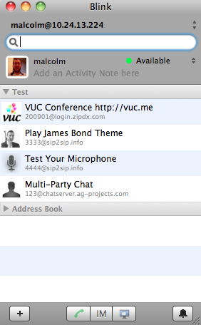
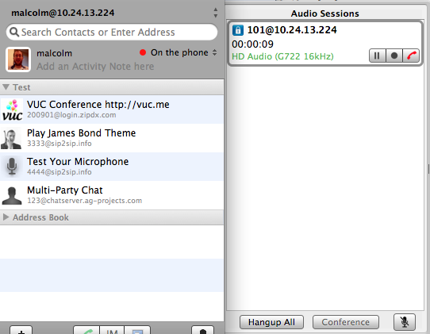
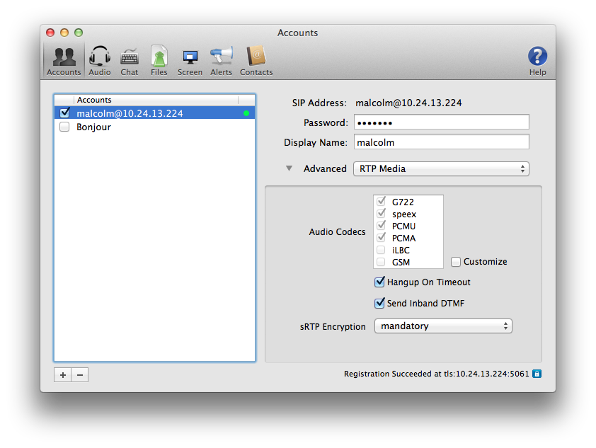
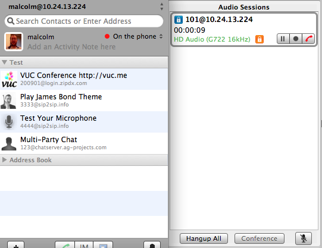
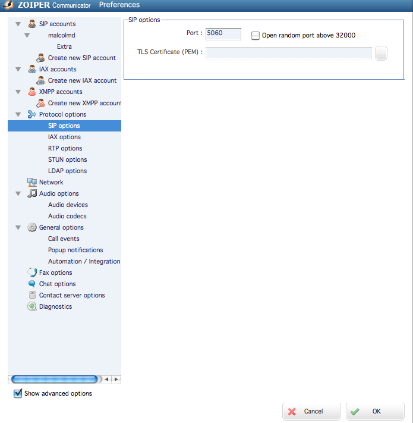

Overview
So you'd like to make some secure calls.
Here's how to do it, using Blink, a SIP soft client for Mac OS X, Windows, and Linux.
These instructions assume that you're running as the root user (sudo su -).
Part 1 (TLS)
Transport Layer Security (TLS) provides encryption for call signaling. It's a practical way to prevent people who aren't Asterisk from knowing who you're calling. Setting up TLS between Asterisk and a SIP client involves creating key files, modifying Asterisk's SIP configuration to enable TLS, creating a SIP peer that's capable of TLS, and modifying the SIP client to connect to Asterisk over TLS.
Keys
First, let's make a place for our keys.
mkdir /etc/asterisk/keys
Next, use the "ast_tls_cert" script in the "contrib/scripts" Asterisk source directory to make a self-signed certificate authority and an Asterisk certificate.
./ast_tls_cert -C pbx.mycompany.com -O "My Super Company" -d /etc/asterisk/keys
- The "-C" option is used to define our host - DNS name or our IP address.
- The "-O" option defines our organizational name.
- The "-d" option is the output directory of the keys.
- You'll be asked to enter a pass phrase for /etc/asterisk/keys/ca.key, put in something that you'll remember for later.
- This will create the /etc/asterisk/keys/ca.crt file.
- You'll be asked to enter the pass phrase again, and then the /etc/asterisk/keys/asterisk.key file will be created.
- The /etc/asterisk/keys/asterisk.crt file will be automatically generated.
- You'll be asked to enter the pass phrase a third time, and the /etc/asterisk/keys/asterisk.pem will be created, a combination of the asterisk.key and asterisk.crt files.
Next, we generate a client certificate for our SIP device.
./ast_tls_cert -m client -c /etc/asterisk/keys/ca.crt -k /etc/asterisk/keys/ca.key -C phone1.mycompany.com -O "My Super Company" -d /etc/asterisk/keys -o malcolm
- The "-m client" option tells the script that we want a client certificate, not a server certificate.
- The "-c /etc/asterisk/keys/ca.crt" option specifies which Certificate Authority (ourselves) that we're using.
- The "-k /etc/asterisk/keys/ca.key" provides the key for the above-defined Certificate Authority.
- The "-C" option, since we're defining a client this time, is used to define the hostname or IP address of our SIP phone
- The "-O" option defines our organizational name.
- The "-d" option is the output directory of the keys."
- The "-o" option is the name of the key we're outputting.
- You'll be asked to enter the pass phrase from before to unlock /etc/asterisk/keys/ca.key.
Now, let's check the keys directory to see if all of the files we've built are there. You should have:
asterisk.crt asterisk.csr asterisk.key asterisk.pem malcolm.crt malcolm.csr malcolm.key malcolm.pem ca.cfg ca.crt ca.key tmp.cfg
Next, copy the malcolm.pem and ca.crt files to the computer running the Blink soft client.
The Asterisk SIP configuration
Now, let's configure Asterisk to use TLS.
In the sip.conf configuration file, set the following:
tlsenable=yes tlsbindaddr=0.0.0.0 tlscertfile=/etc/asterisk/keys/asterisk.pem tlscafile=/etc/asterisk/keys/ca.crt tlscipher=ALL tlsclientmethod=tlsv1 ;none of the others seem to work with Blink as the client
Here, we're enabling TLS support.
We're binding it to our local IPv4 wildcard (the port defaults to 5061 for TLS).
We've set the TLS certificate file to the one we created above.
We've set the Certificate Authority to the one we created above.
TLS Ciphers have been set to ALL, since it's the most permissive.
And we've set the TLS client method to TLSv1, since that's the preferred one for RFCs and for most clients.
Configuring a TLS-enabled SIP peer within Asterisk
Next, you'll need to configure a SIP peer within Asterisk to use TLS as a transport type. Here's an example:
[malcolm] type=peer secret=malcolm ;note that this is NOT a secure password host=dynamic context=local dtmfmode=rfc2833 disallow=all allow=g722 transport=tls context=local
Notice the transport option. The Asterisk SIP channel driver supports three types: udp, tcp and tls. Since we're configuring for TLS, we'll set that. It's also possible to list several supported transport types for the peer by separating them with commas.
Configuring a TLS-enabled SIP client to talk to Asterisk
Next, we'll configure Blink.
First, let's add a new account.

Then, we need to modify the Account Preferences, and under the SIP Settings, we need to set the outbound proxy to connect to the TLS port and transport type on our Asterisk server. In this case, there's an Asterisk server running on port 5061 on host 10.24.13.233.

Now, we need to point the TLS account settings to the client certificate (malcolm.pem) that we copied to our computer.

Then, we'll point the TLS server settings to the ca.crt file that we copied to our computer.

Press "close," and you should see Blink having successfully registered to Asterisk.

Depending on your Asterisk CLI logging levels, you should see something like:
-- Registered SIP 'malcolm' at 10.24.250.178:5061
> Saved useragent "Blink 0.22.2 (MacOSX)" for peer malcolm
Notice that we registered on port 5061, the TLS port.
Now, make a call. You should see a small secure lockbox in your Blink calling window to indicate that the call was made using secure (TLS) signaling:

Part 2 (SRTP)
Now that we've got TLS enabled, our signaling is secure - so no one knows what extensions on the PBX we're dialing. But, our media is still not secure - so someone can snoop our RTP conversations from the wire. Let's fix that.
SRTP support is provided by libsrtp. libsrtp has to be installed on the machine before Asterisk is compiled, otherwise you're going to see something like:
[Jan 24 09:29:16] ERROR[10167]: chan_sip.c:27987 setup_srtp: No SRTP module loaded, can't setup SRTP session.
on your Asterisk CLI. If you do see that, install libsrtp (and the development headers), and then reinstall Asterisk (./configure; make; make install).
With that complete, let's first go back into our peer definition in sip.conf. We're going to add a new encryption line, like:
[malcolm] type=peer secret=malcolm ;note that this is NOT a secure password host=dynamic context=local dtmfmode=rfc2833 disallow=all allow=g722 transport=tls encryption=yes context=local
Next, we'll set Blink to use SRTP:

Reload Asterisk's SIP configuration (sip reload), make a call, and voilà:

We're making secure calls with TLS (signaling) and SRTP (media).
Attachments:
{kind=link}
{kind=link}
{kind=link}
{kind=link}
{kind=link}
{kind=link}
{kind=link}
{kind=link}
{kind=link}
Comments:
|
Thanks for this doc! Gilles |
|
I don't have Zoiper Biz or Windows. My best guess, by looking at the Free version for Mac, which does not support TLS or SRTP, says it should probably go in the box here:  You might have to watch the port number configured there as well; TLS runs, by default, on 5061, not 5060. |
|
I tried my registered biz version (2.30) and the free version of Zoipper (2.36) for Windows, in both this TLS Certificate file option isn't there. However, I can see it disabled in the Linux version (1.18). So I'm now using PhonerLite where I could find it. Thanks for that. But, by default, TLS works fine without the user certificate. Also, when my client registers, I get something like : Many people use the following variables in their dialplan when setting sRTP : When I set SRTP (both on clients and server sides), the only difference I can see with TLS is that the media goes through the server and not straight to the other client. Like with TLS only, for the media, I don't see the UDP/RTP layer anymore, but UDP/Data. Also, with or without sRTP set, UDP/Data begins with 800 hex code, like with UDP, that makes me think sRTP doesn't work for me. Also, I always get this error message : Thanks for your help, |
|
The asterisk-users list is a great place for long discussions and lots of questions. [Jan 28 17:29:14] WARNING9646: res_srtp.c:338 ast_srtp_unprotect: SRTP unprotect: authentication failure What does it mean ? What do I need to do to make it work ? It probably means your client isn't capable of AES_CM_128_HMAC_SHA1_80, but instead only AES_CM_128_HMAC_SHA1_32. Asterisk invites back to the client only with AES_CM_128_HMAC_SHA1_80 currently. See: https://issues.asterisk.org/view.php?id=18674 |
|
Hi Malcolm, Thank you! |
|
Hi, It's only in the contrib/scripts directory for Asterisk 1.8, it's not present for older releases. You can download 1.8 to get it, check 1.8 out of SVN, or see it here: http://svn.digium.com/view/asterisk/branches/1.8/contrib/scripts/ast_tls_cert?view=log Cheers. |
|
Hi, |
|
Hi Malcolm, Thank you |
|
Hi, Tutorials on how to install packages are beyond the scope of this Wiki. Google may be of some use, depending on your base Linux distribution. You said you were using Elastix. I do not think Elastix supports Asterisk 1.8, thus you can't use SRTP with Elastix until it does. Then, presumably, Palo Santo will have packaged Asterisk in a way that it is linked against the libsrtp dependency, so use of SRTP would then be simple. I cannot provide a tutorial here for how to repackage Asterisk for Elastix. |
|
Hi, Thank you very much AZZOUZI |
|
Hi, Please take that question to the asterisk-users mailing list. Cheers. |
|
Hi, Does anybody have tutorial for Aastra phones with TLS and Asterisk? |
|
Hi Azzouzi, |
|
Hi, Great how-to, really!! I've tested with blink softphone and it works. But, I'd like to get working tls on Aastra phones (6755i particulary). Did you test this? Anyone here have tried to get TLS working in Aastra phones? I have a doubt. I fill the TLS Support blanks with the files names which I had put in my /tftpboot but it's not working, and the tftp server is working in my asterisk server (Debian 6.0, Asterisk 1.8). Any ideas? Any screenshot? Thanks so much. Alejandro. |
|
Hi Ales Silar, Thanks. |
|
Hi Andrea, but it works without SRTP! I tested blink without (TLS/SRTP) and it can make calls! |
|
Dear Malcolm, thanks for this great tutorial. If the client is a mobile device (e.g. an iPhone running Bria hooked up to a mobile network or a wlan) how can anyone generate a certificate? The -C option requires an IP or a DNS name, but in the case I outlined above the IP is STRONGLY dynamic and the DNS doesn't exist... Must I assume that TLS is available only for on-lan, static clients? Or there is something I don't know? Thanks Carlo |
|
Great !! What type of SRTP here? Is it SDES, DTLS, or MIKEY ? Thanks |
|
thanks malcolm for tutorial,, i'm trying to set up TLS in asterisk 1.8.4.3 and ubuntu 10.04. and blink as client in windows. any ideas? |
|
I'm running the latest freepbx with (*)1.8.19.1. I downloaded the script from SVN 1.8.19.1 tag and executed the instruction above. I'm getting the following error when I perform a 'sip reload'
I made sure that the file is accessible and the contents of the file seem correct. cat /etc/asterisk/keys/asterisk.pem returns: ----- BEGIN RSA PRIVATE KEY ----- Any ideas on what the problem might be? |
|
Nope, and you'll want to ask that on the asterisk-users list, or the FreePBX mailing list, as the wiki is not a support forum. |
|
Does selecting "use SRTP without TLS" mean SRTP key exchange happens in clear text? If so this not good. Is this the only way to get asterisk to work when using SRTP? This option is not available anyway in recent versions of blink. Can you give a snippet of dial-plan code you used to make this work? I had to use: CHANNEL(secure_bridge_signaling)=1 Before calling Dial() to make TLS work. This isn't mentioned above. I tried the following in a similar fashion to get SRTP to work, unfortunately it didn't. CHANNEL(secure_bridge_media)=1 The module is loaded. I've followed the guide above. Is there anything else to be done? Thanks. |
|
I noticed you took down the picture with selecting "use SRTP without TLS" enabled. Have you tested this configuration with and without the option selected? What was the result? Can asterisk only exchange SRTP keys in clear text? Thanks again. |
|
If you're configured for TCP then they'll be exchanged in clear text. If you're configured for TLS then they're only exchanged in the secured TLS. Since in this guide we were already doing TLS, things were fine. I changed the image to remove any ambiguity. |
|
Hello, |
|
Ameer, Digium hosts several places for the community to ask questions and help each other out. You might try your question on the asterisk-users list or #asterisk IRC channel: http://www.asterisk.org/community/discuss or the forums at http://forums.asterisk.org/ Very few users will see your question here, as most users don't watch or subscribe to particular wiki pages (like this one).
|
|
Hi i do all the steps, i installed blink on my Win 7 Ultimate 64 bits, when i tried to import the ca.crt i receive and error saying: The certificate file is invalid: Base64 unexpected error, what could be the error? |
|
I don't know. You can go to http://projects.ag-projects.com/projects/blinkc/wiki/Help_For_Blink_Pro to find help resources for Blink.
|
|
Hi Rusty, i will try with grandstream gxp2124 because i used eyebearm softphone and don't work, i will let you know, thanks for the reply |
|
It'll be more useful to bring your questions up on the asterisk-users mailing list. That is the primary place for community support at the moment. Thanks. |
|
Thanks Rusty, im trying to be more proactive, best regards |
|
Thanks Rusty, im trying to be more proactive, best regards |
|
Just a comment regarding the secure signalling part and a solution to an issue I have encountered. If you are using a device with a static IP (and probably a fixed hostname), the CN field in the certificate should be set to that IP or hostname and everything will work fine.
However, should you use a device with dynamic IP (roaming users), and you want to leverage TLS signalling, Asterisk will throw errors and terminate sessions if the CN on the certificate does not match the originating IP or hostname. An easy fix is to go into the tcptls.c file, remove the part on line 243 that returns a false if the hostname does not match the originating address and voila. I am not sure how that affects security (if at all) since I assume Asterisk checks whenever the signature on the certificate is the CA's (which is really the only cryptographic parameter that matters); but that's just my opinion. |